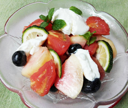

フルーツトマトと桃のマリネ ヨーグルト添え
- 調理時間：15 分
- （一人当たり）
- カロリー：139kcal
- たんぱく質：3.8g
- 脂質：7.4g
- 炭水化物：15.4g
- 塩分：0.6g


＜2人分＞
- フルーツトマト
- 200g
- オリーブオイル
- 小さじ2
- 塩
- 少々
- 桃
- 1個
- ブルーベリー
- 30g
- 水切りヨーグルト
- 100g
- 青ユズ、ミント（飾り用）
- お好みで


- 1.フルーツトマトは中央に十文字で切り目を入れて熱湯につける。
2.すぐに湯から引き揚げて冷水にとり、はじけた皮を手でむく。
3.湯むきしたトマトは、くし切りにする。 - 1.桃は皮つきのまま、種の周りを1周切り込みをいれる。
2.桃を両手でもち、右手と左手を反対方向にひねると種がとれる。
3.皮をむいて、くし切りにする。
※塩水にサッとつけると変色を防げる。 - ①のフルーツトマトをボウルにいれ、オリーブオイルと塩を回しかけ、和える。
- お皿にフルーツトマト、桃、ブルーベリー、水切りヨーグルトを盛り付け、青ユズとミントを飾る。
フルーツトマトと桃のマリネ
ヨーグルト添え
「フルーツトマト」は品種の名前ではなく、商品名です。糖度が高く、味が濃厚なのが特徴。
トマトが甘くなるように栽培し、販売者がフルーツトマトと認めれば、そのトマトは「フルーツトマト」になります。多くの場合、フルーツトマトの糖度は８度以上。ちなみに通常のトマトの糖度は5.5～6.5度といわれています。フルーツトマトで有名なブランドは、静岡県の「アメーラ」や、高知県の「徳谷トマト」です。
女性に嬉しいβカロテンやリコピンなどの栄養素をたっぷり含むトマトは、美容にもダイエットにも良いとされており、夏の水分補給にもおすすめです。